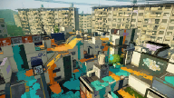
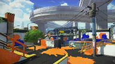
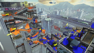
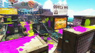
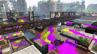
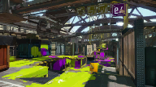
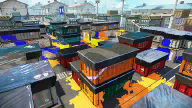
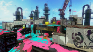
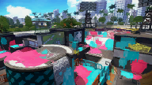
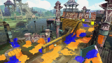

Time Until next Rotation
Hold On to your Tentacles! It's time for Inkopolis news!
Here are the current Turf War Maps on Rotation for today!
[10-31]
3:00AM-7:00AM:
Flounder Heights , Mahi-Mahi Resort
7:00AM-11:00AM:
Urchin Underpass , Moray Towers 
11:00AM-3:00PM:
Arowana Mall , Bluefin Depot 
3:00PM-7:00PM:
Walleye Warehouse , Port Mackerel 
7:00PM-11:00PM:
Saltspray Rig , BlackBelly Skatepark 
11:00PM-3:00AM:
Urchin Underpass , Camp Triggerfish 
...And Here are the Ranked Map rotations for today!
3:00AM-7:00AM
Mode: RainMaker
Maps: Kelp Dome, Moray Towers
7:00AM-11:00AM
Mode: SplatZones
Maps: Mahi-Mahi Resort, Ancho-V Games
11:00AM-3:00PM
Mode: TowerControl
Maps: Moray Towers, Museum D'Alfonsino
3:00PM-7:00PM
Mode: SplatZones
Maps: Arowana Mall, Piranha Pit
7:00PM-11:00PM
Mode: RainMaker
Maps: Urchin Underpass, Bluefin Depot
11:00PM-3:00AM
Mode: SplatZones
Maps: Flounder Heights, Museum D'Alfonsino
..And looks like we're out of time.
Until next time... Staaay fresh!